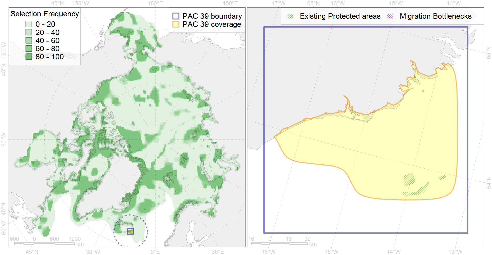

Region 39
Region 39
“ArcNet” scenario 33 achievement for region 39.
Use Accenter for advanced mode.

0
CFs inside of Region completely
0
CFs inside of Region at quarter
1
Complete-targets achievement by Region
3
Half-targets achievement by Region
| CF | Name | Target Achievement for Region | Proportion of Target Achievement in Region | Amount Proportion in Region |
|---|---|---|---|---|
| 6057 | Common eider (Somateria mollissima borealis) Spitsbergen wintering grounds | 37.4% | 36.6% | 21.1% |
| 7212 | V.2.1. South Iceland shelf and glacial troughs | 104.3% | 19.8% | 13.2% |
| 7054 | cold corals of Iceland and East Greenland | 16.9% | 16.4% | 10.5% |
| 6086 | Long-tailed duck (Clangula hyemalis) Iceland moulting&migration stopovers | 15.8% | 15.5% | 9.2% |
| 6054 | Common eider (Somateria mollissima borealis) Iceland wintering grounds | 14.0% | 13.3% | 8.0% |
| 4082 | Fish zoogeography, Atlantic Boreal Region, low-boreal district of the Eastern Atlantic subregion | 79.2% | 19.2% | 6.2% |
| 6075 | Common murre (Uria aalge aalge) breeding grounds | 8.1% | 7.7% | 4.6% |
| 5055 | Harbour porpoise feeding areas in Iceland | 67.1% | 10.6% | 4.6% |
| 7029 | Iceland region | 25.1% | 11.3% | 4.2% |
| 5098 | White-beaked dolphin feeding area in the Central North Atlantic | 28.5% | 9.4% | 4.1% |
| 6060 | Common eider (Somateria mollissima borealis) Iceland breeding&moulting grounds | 6.2% | 5.9% | 3.6% |
| 5066 | Minke whale feeding areas in the Central Atlantic | 20.8% | 6.2% | 2.9% |
| 4068 | Migration area of European Eel (Anguilla anguilla) (F5): | 9.6% | 5.3% | 2.7% |
| 6101 | 6101 Uriaalge aalge breeding colonies | 6.0% | 4.3% | 2.5% |
| 2017 | Grey seal distribution range | 33.8% | 4.8% | 2.3% |
| 7213 | V.2.2. South Iceland slope | 9.6% | 7.0% | 2.0% |
| 5059 | Humpback whale summer feeding areas in the Eastern Greenland and Iceland | 13.6% | 4.6% | 1.8% |
| 4030 | Feeding area of the Arctic charr (Salvelinus alpinus), anadromous populations (F28) | 2.6% | 2.3% | 1.1% |
| 6106 | 6106 Urilomvilomvibreeding colonies | 1.5% | 1.1% | 0.8% |
| 6047 | Black-legged kittiwake (Rissa tridactyla pollicarius) breeding colonies | 1.2% | 1.0% | 0.8% |
| 4054 | Range of the Shorthorn Sculpin (Myoxocephalus scorpius) (F 46), European populations | 22.4% | 1.6% | 0.8% |
| 6099 | 6099 Rissa tridactyla tridactyla breeding colonies | 0.9% | 0.9% | 0.7% |
| 4027 | Feeding/migration area of the Atlantic salmon (Salmo salar) American populations (F27) | 2.6% | 1.8% | 0.6% |
| 6002 | Little Auk (Alle alle alle) winetring grounds | 2.0% | 1.4% | 0.6% |
| 2019 | Harbour seal range in the North Atlantic region | 7.9% | 1.2% | 0.5% |
| 4057 | Range of the American Plaice (Hippoglossoides platessoides) (F 47), American populations | 15.4% | 1.4% | 0.5% |
| 6076 | Common murre (Uria aalge aalge) wintering grounds | 2.5% | 1.4% | 0.5% |
| 4049 | Range of the Haddock (Melanogrammus aeglefinus) (F 42) | 7.2% | 1.2% | 0.5% |
| 6082 | Thick-billed murre (Uria lomvia lomvia) breeding colonies | 0.6% | 0.5% | 0.5% |
| 6049 | Black-legged kittiwake (Rissa tridactyla tridactyla) wintering grounds | 1.2% | 1.2% | 0.4% |
| 6023 | Atlantic puffin (Fratercula arctica naumanni) wintering grounds | 1.4% | 1.1% | 0.4% |
| 5037 | Blue whale summer feeding areas in the Northeast Atlantic | 1.2% | 0.9% | 0.4% |
| 4059 | Range of the Greenland Halibut (Reinhardtius hippoglossoides) (F 49) | 8.1% | 0.7% | 0.3% |
| 4046 | Range of the Thorny Skate (Amblyraja radiata) (F 3) | 3.1% | 0.6% | 0.3% |
| 4045 | Feeding/migration area of the Pink Salmon (Oncorhynchus gorbuscha), native distribution (F23) | 3.4% | 0.6% | 0.2% |
| 6083 | Thick-billed murre (Uria lomvia lomvia) wintering grounds | 0.8% | 0.5% | 0.2% |
| 4003 | Range of the Atlantic Capelin (Mallotus villosus) (F10) | 6.0% | 0.5% | 0.2% |
| 4017 | Feeding/ migration area of the Greenland Shark (Somniosus microcephalus) (F1) | 0.8% | 0.5% | 0.2% |
| 4069 | Spawning areas of the Atlantic herring (Clupea harengus) (F6) | 0.3% | 0.0% | 0.0% |
| 5101 | Bottlenose whale summer feeding areas in the Northeast Atlantic | 0.1% | 0.1% | 0.0% |
| 7064 | I.1.1.1. Coastal domain in the Barents Sea | 0.0% | 0.0% | 0.0% |